Photo Cleaner: Swipe Cleanup
Clean up your iPhone photos with a swipe
Swipe left to delete, right to keep. Photo Cleaner finds duplicates, similar shots, blurry photos, screenshots and huge videos on your iPhone or iPad, and nothing is deleted until you review the Trash Bin.
- Free to download
- iOS 17+
- 100% on-device
- No account
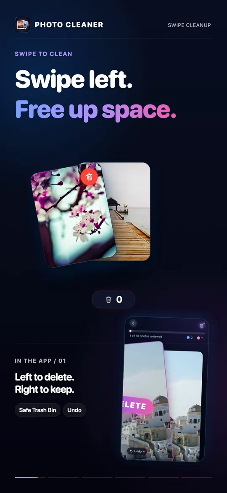
Three steps
How it works
Nothing is deleted until you have reviewed it and confirmed.
Swipe
Go through your library one photo at a time. Left to delete, right to keep. No grids, no multi-select.
Review
Everything you swipe left lands in the Trash Bin. Look it over and recover anything you changed your mind about.
Delete
Empty the Trash Bin, confirm in the iOS dialog, and see a recap of photos cleaned and storage freed.
Screenshots
A look inside the app
The current App Store screenshots. Scroll sideways to see all eight.
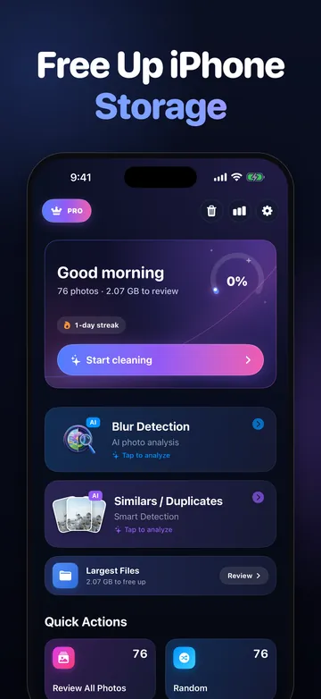
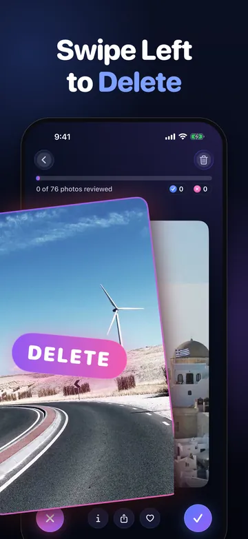
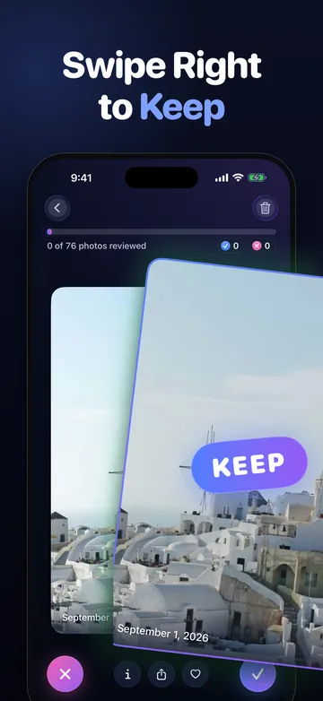
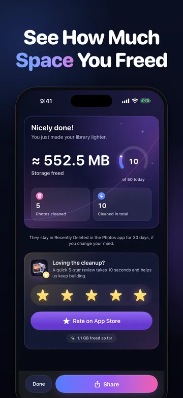
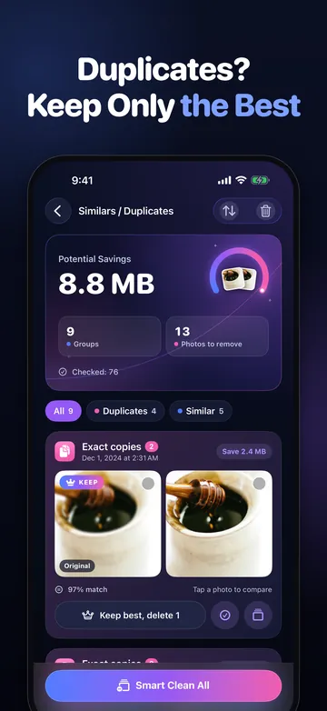
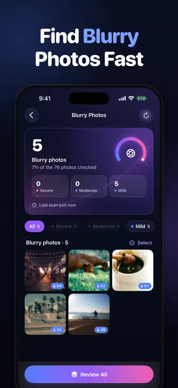
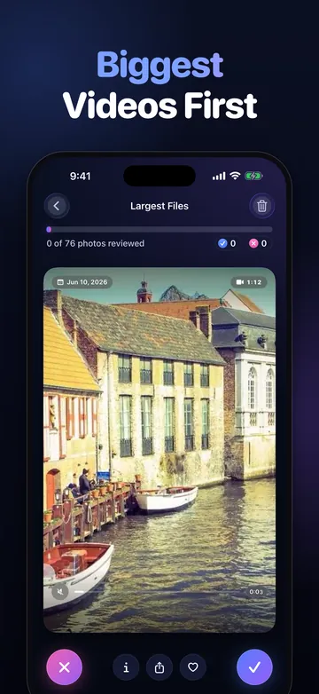
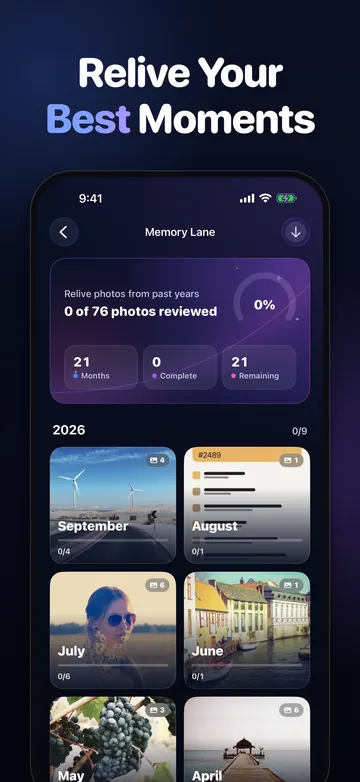
Features
Everything that fills up your camera roll, in one place
Swipe
Swipe to clean, with a safe Trash Bin
Each decision takes a second: left to delete, right to keep. Nothing is deleted when you swipe. Photos wait in the Trash Bin until you empty it, iOS asks you to confirm, and Recently Deleted keeps them for 30 days.
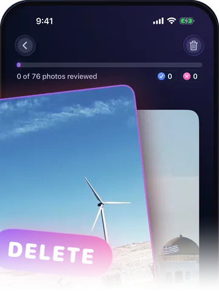
Similars / Duplicates
Keep only the best shot
The Similars / Duplicates finder groups exact copies and near-identical shots (the five takes of the same group photo) and marks the best one. Keep the best only, or pick your own.
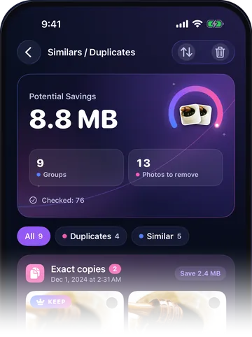
Blur Detection
Find blurry photos fast
On-device analysis flags shots that are likely out of focus or shaken, so you can clear them without hunting through thousands of thumbnails. You still decide what to delete.
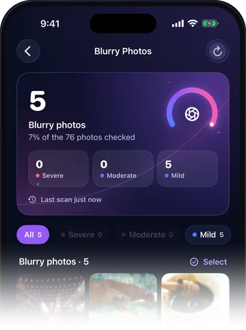
Largest Files
Biggest videos first
Largest Files sorts photos and videos by size, with big 4K videos first, and you swipe through them one at a time. Often the fastest way to free gigabytes.
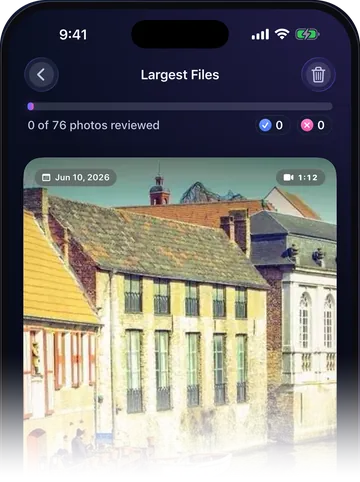
Smart categories
Screenshots, Videos, Live Photos, Bursts and Favorites, each one swipe session away.
Messaging-app photos
Pictures saved from WhatsApp and Messenger get their own albums to swipe through.
Memory Lane
Photos grouped by month so you can relive past years while you tidy them, plus Today's Throwback.
Session recap
After each session, see how many photos you cleaned and how much storage you freed.
Stats and streaks
A few minutes a day adds up. Streaks keep the habit going. The 10-minute method
iPhone and iPad
Works on iOS 17 and later, in English, French, German, Japanese, Russian, Chinese (Simplified) and Spanish.
Privacy
Private by design
100% on-device
Duplicate grouping, blur detection and size sorting all run on your device. Your photos never leave it.
No account, no tracking
No sign-up, no ads, no analytics on your library, no data collection. It works offline. Read the privacy policy
Reviews
What App Store reviewers say
Rated 4.6★ by 35 App Store users (US). Quotes are unedited App Store reviews.
“Literally the only app that actually finds exact duplicates and it does it very quickly. Absolutely love this and I have 6 of these apps I've tried.”
“Absolutely brilliant app. Cleared thousands of old photos and screenshots from my phone in minutes just by swiping.”
“This app is really nice. It does a great job at identifying huge files, blurry images and bad photos.”
Guides
Free guides to cleaning up iPhone photos
Each guide starts with what iOS can already do for free, then shows where an app helps.
Delete duplicate photos on iPhone
Merge exact copies for free in Photos, then clear the similar shots it leaves.
Free up iPhone storage from Photos
Biggest wins first: videos, Live Photos, screenshots, bursts and duplicates.
Clean up your camera roll fast
The swipe method: one decision per photo, ten minutes a day.
Delete blurry photos on iPhone
Photos has no blur filter. Find them by hand, or flag them on-device.
Delete screenshots on iPhone
Bulk-delete from the Screenshots album, then stop them piling up again.
Find large videos on iPhone
Photos can't sort by size. How to find the biggest videos anyway.
iPhone storage full with iCloud Photos
Device vs iCloud storage, Optimize iPhone Storage, and why deletions sync.
Empty or recover Recently Deleted photos
Free the space now, or get photos back within 30 days.
Mass delete photos on iPhone
Drag to select hundreds at once, then get the storage back.
FAQ
Frequently asked questions
Is Photo Cleaner free?
Yes. Photo Cleaner is free to download and the free tier includes a one-time allowance of 100 deletions. Photo Cleaner Pro is an optional subscription (yearly, monthly or weekly), and there is also a one-time lifetime option.
Does Photo Cleaner upload my photos?
No. All analysis happens on your iPhone or iPad. There is no account, your photos are never uploaded, the app collects no personal data, and it works offline.
Are photos deleted immediately when I swipe left?
No. Swiping left moves a photo to Photo Cleaner's Trash Bin. You review the Trash Bin and can recover anything until you empty it. When you do, iOS asks you to confirm, and the photos then go to the Recently Deleted album in the Photos app, where iOS keeps them for 30 days.
Will deleting photos also delete them from iCloud?
If iCloud Photos is turned on, yes: deleting a photo on one device removes it from iCloud and your other devices too. That is how iCloud Photos sync works, whichever app you use to delete.
How does Photo Cleaner find duplicates?
The Similars / Duplicates finder groups exact copies and near-identical shots, such as several frames of the same moment, and marks the best one. You can keep only the best shot and send the rest to the Trash Bin.
Can it find blurry photos?
Yes. Blur Detection uses on-device analysis to flag likely out-of-focus shots. You still decide what to delete.
Which devices and iOS versions are supported?
iPhone and iPad running iOS 17 or later (iPadOS 17 or later on iPad).
Which languages does the app support?
English, French, German, Japanese, Russian, Chinese (Simplified) and Spanish.
How do I cancel a Photo Cleaner Pro subscription?
Open Settings, tap your name, then Subscriptions, choose Photo Cleaner and tap Cancel Subscription. Subscriptions are managed by Apple, not by the app.
Does Photo Cleaner show ads?
No. There are no ads and no tracking.
Ready to clear the clutter?
Free to download. 100 deletions free, one time. No account needed.